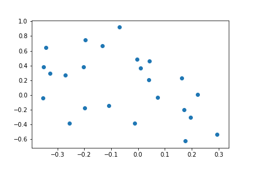

Introduction
The past several years have been characterized by a major shift in the political landscape of the western world. Ever since the election of Donald Trump as the 45th president of the United States of America, the popularity of far right-wing parties seems to be on the rise. Marginalized ever since the end of the Second World War, nationalistic parties have made their comeback on the political map in the recent years. This phenomena threatens to destroy the centre-left/centre-right duopoly that has dominated the European politics. More imprtantly, the strong rise of nationalism can threaten the existence of the European Union, as we have seen in the case of the Brexit referendum. The campaign for Brexit was mainly led by anti-EU nationalistic parties, demanding control over their country’s borders, finance and political decisions. If this trend spreads across Europe we can see the demise of the European Union in the following years, most probably followed by the end of one of the longest peaceful periods on the European continent in the history. For ths reason, we believe that it is very beneficial to systematically study the success of nationalistic parties across the members of the European Union, as well as the reasons and consequences of the shift in the ideology of the ruling parties.
Shift in election results
Let us start with investigating the success of the right-wing parties in the last national elections across the member countries of the European Economic Area (EEA). For this purpose, we have gathered the results of the last two elections in each member country. In our analysis, we are considering only the parties which have won seats in the national parliament because these are the only parties that have some political power on national and international level. In this section, we will take an aggregated look at the data, and observe the global trend across the European continent. In the first subsection, we are going to take a look at the shift in popularity of different political ideologies by observing the number of votes obtained by each ideology. In the second part, we will see whether there is a shift in the power dynamics of European politics by observing the number of seats won by parties with different ideologies. For this purpose, we have matched each party in our dataset with its political ideology ranging from far-left to far-right
Shift in popularity
